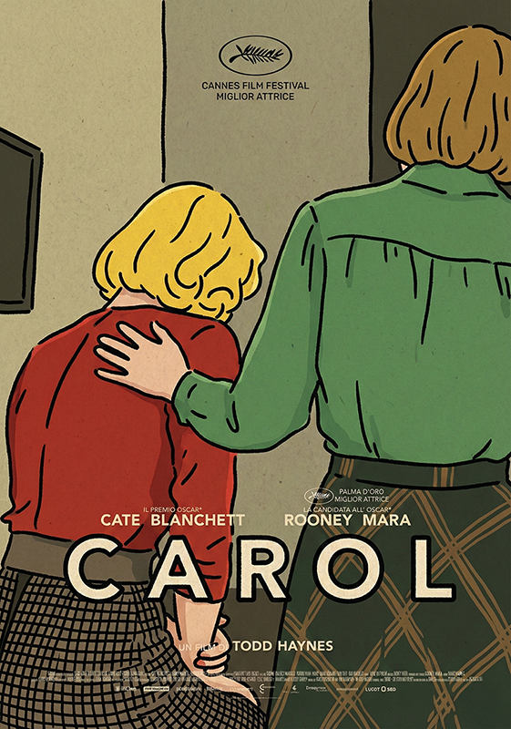
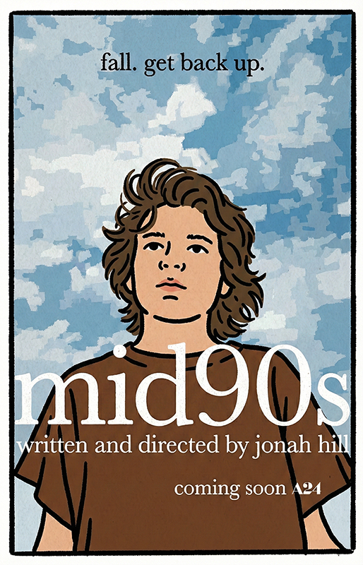
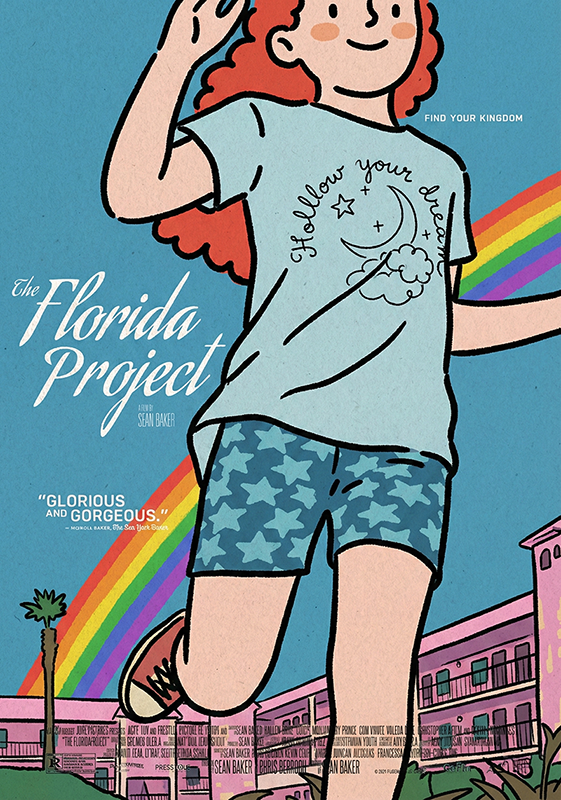
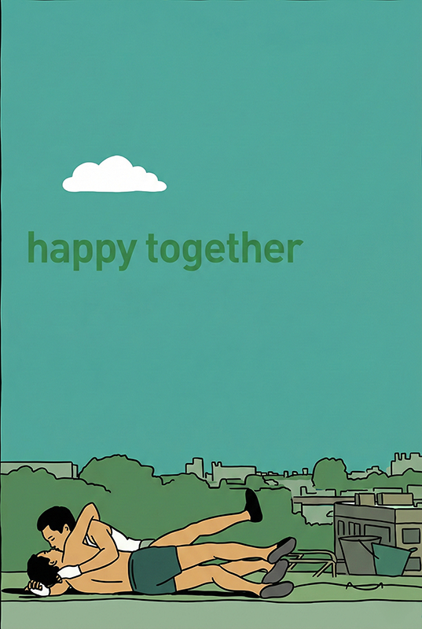
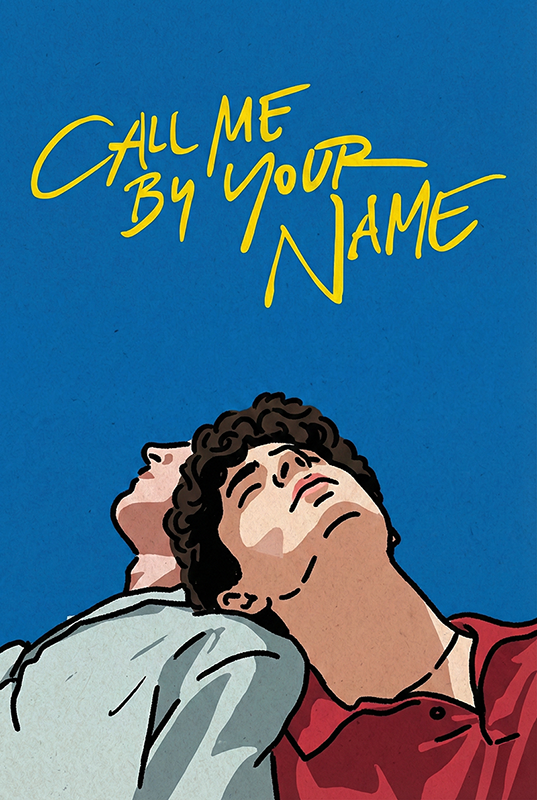
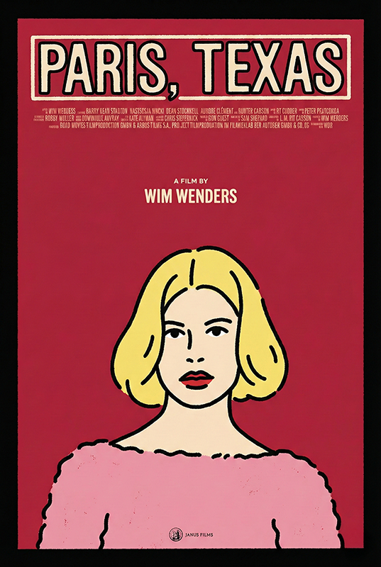
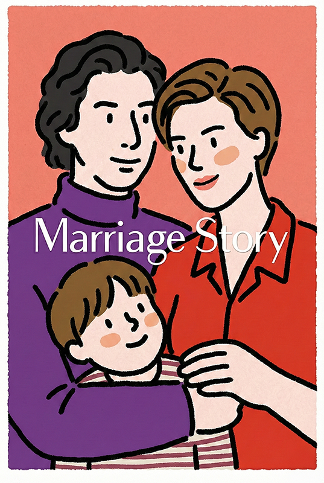
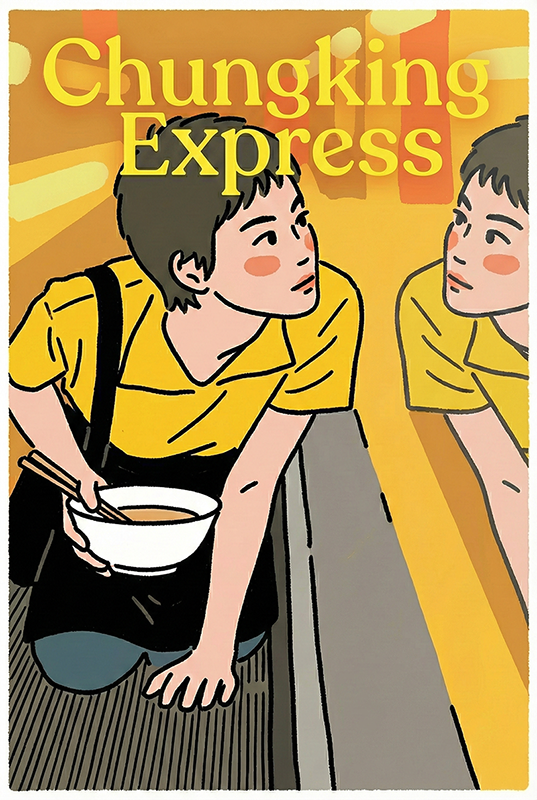
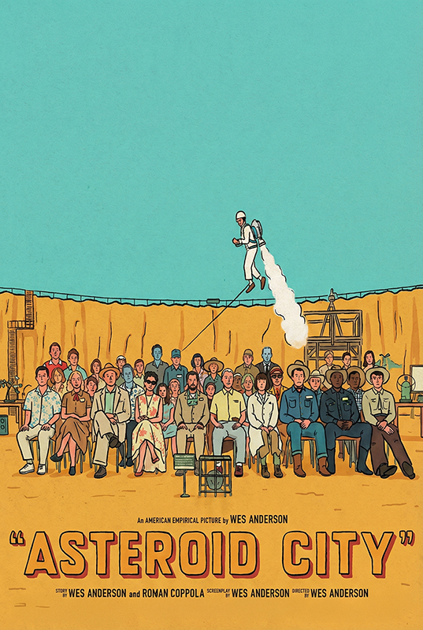
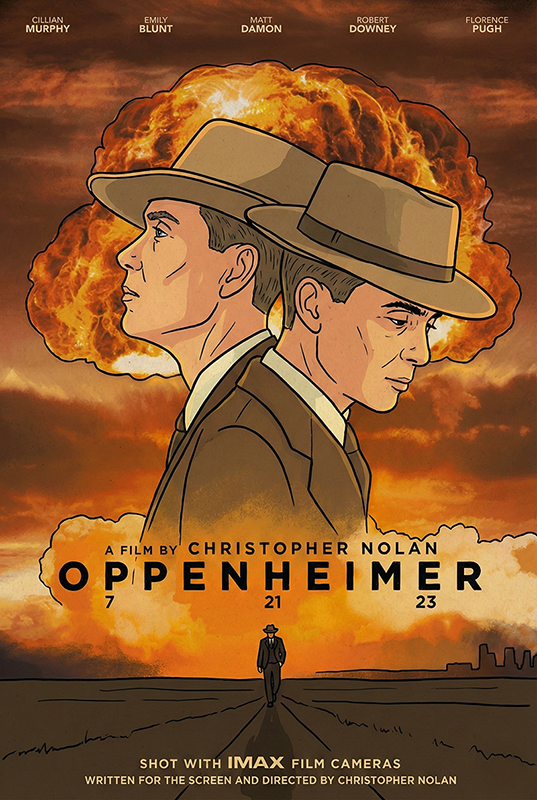

"디지털의 무결점에는 감정이 없다."
디지털 신호가 세상을 지배하는 시대, 최신의 센서는 눈앞의 풍경을 노이즈 하나 없이 완벽하게 복제해 낸다. 하지만 빠르고 효율적인 것이 정답이 된 이 세상에서, 여전히 차가운 메모리 카드 대신 묵직한 필름 매거진을 카메라에 장전하는 창작자들이 있다.
픽셀로 쪼개진 매끈한 이미지에는 결코 담기지 않는, 오직 화학 반응만이 만들어낼 수 있는 우연과 필연의 미학. 불규칙하게 끓어오르는 필름의 그레인은 마치 인물의 거친 숨소리처럼 화면을 진동시키고, 투박한 색감은 이야기의 질감을 비로소 완성한다.
Vol.02 〈Feature〉에서 5ft magazine은 필름으로 기록된 10편의 영화를 엄선했다. 〈캐롤〉의 서늘한 겨울 공기부터 〈플로리다 프로젝트〉의 끓어오르는 여름 햇살, 〈중경삼림〉의 텅스텐 야경, 그리고 〈오펜하이머〉의 묵직한 흑백 IMAX 필름까지. 거장들이 빛을 다루는 방식을 당신의 뷰파인더 안으로 가져올 10가지 영화의 기록.
10편의 시네마 한눈에

01 캐롤 Carol · 2015
02 미드 90 Mid90s · 2018
03 플로리다 프로젝트 The Florida Project · 2017
04 해피 투게더 Happy Together · 1997
05 콜 미 바이 유어 네임 Call Me by Your Name · 2017
06 파리, 텍사스 Paris, Texas · 1984
07 메리지 스토리 Marriage Story · 2019
08 중경삼림 Chungking Express · 1994
09 애스터로이드 시티 Asteroid City · 2023
10 오펜하이머 Oppenheimer · 2023사용된 모든 이미지는 Google Gemini를 이용해 제작되었습니다.
다섯 편을 먼저 펼친다
10편 중 다섯 편의 빛을 먼저 살펴본다. 각 영화의 사용 필름과 가장 비슷한 결을 만드는 추천 필름, 그리고 그 분위기를 카메라에 옮기는 팁까지.
캐롤
Carol · 2015
하늘에서 떨어진 기적, 나의 천사.
1950년대 뉴욕, 백화점 점원과 매혹적인 손님의 운명적이고 금지된 사랑을 다룬다. 차가운 겨울 공기 속에서 피어오르는 감정을 16mm 필름으로 섬세하게 포착했다.
플로리다 프로젝트
The Florida Project · 2017
가장 환상적인 곳 옆, 가장 현실적인 삶.
디즈니월드 옆 허름한 모텔에 사는 6살 무니의 눈으로 본 세상. 아이들의 천진난만함과 냉혹한 빈곤의 현실을 팝아트 같은 강렬한 색채 대비로 담았다.
콜 미 바이 유어 네임
Call Me by Your Name · 2017
네 이름으로 나를 불러줘, 내 이름으로 너를 부를게.
1983년 이탈리아, 17세 소년과 24세 청년의 뜨거웠던 첫사랑의 기록. 그해 여름의 햇살과 나른한 공기까지 고스란히 필름에 담아냈다.
중경삼림
Chungking Express · 1994
사랑에 유통기한이 있다면, 만 년으로 하고 싶다.
화려한 네온사인이 빛나는 홍콩의 밤, 스치고 엇갈리는 네 남녀의 고독과 로맨스. 감각적인 핸드헬드 촬영과 독특한 색감이 홍콩의 밤거리를 아름답게 수놓는다.
오펜하이머
Oppenheimer · 2023
나는 이제 죽음이요, 세상의 파괴자가 되었다.
핵무기 개발을 이끈 천재 과학자의 영광과 죄책감을 다룬 전기 영화. 흑백과 컬러를 오가는 세계 최초의 IMAX 흑백 필름 촬영으로 압도적인 몰입감을 선사한다.
나머지 다섯 편은 매거진에서
스케이트보드를 타고 90년대 LA의 거리를 누비는 소년의 거친 입자감, 부에노스아이레스의 끈적한 사랑, 사막을 가로지르는 로드무비, 차가운 법정 안의 따뜻한 코닥, 웨스 앤더슨의 강박적인 대칭 — 각자의 빛으로 새겨진 다섯 편의 영화 이야기는 Vol.02에 자세히 담겼다.
각 영화의 사용 필름, 추천 필름, 그리고 그 무드를 카메라에 옮기는 디테일한 촬영 팁은 5ft magazine Vol.02의 〈Feature〉 코너에서 만날 수 있다.
남은 다섯 편의 빛, 매거진에서
10편 시네마의 전체 큐레이션과 시네스틸 800T가 담아낸 세 작가의 사진까지 — 종이 위에서 만나보세요.